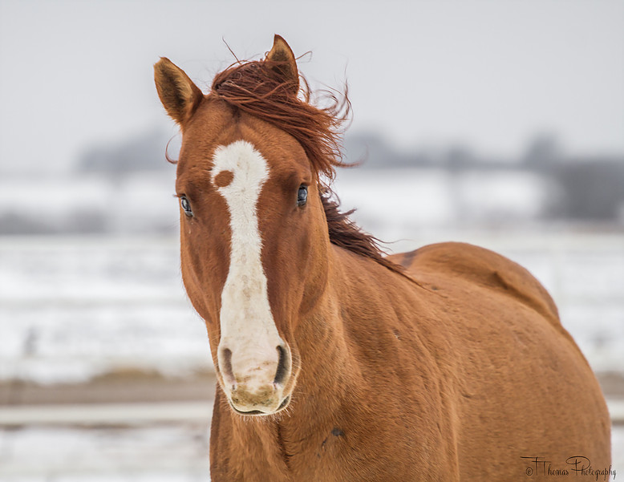
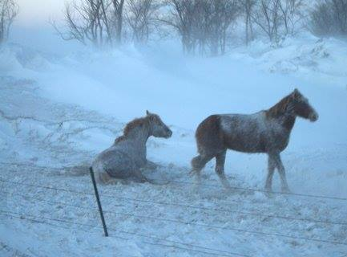
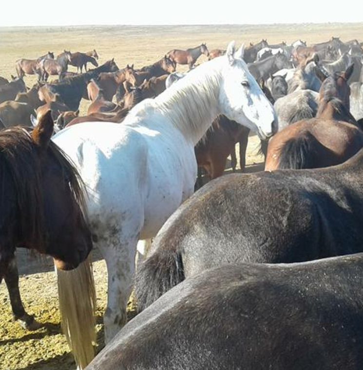
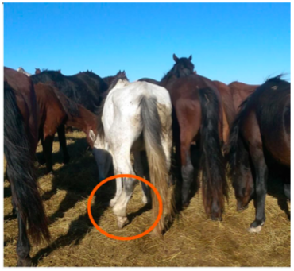
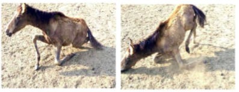
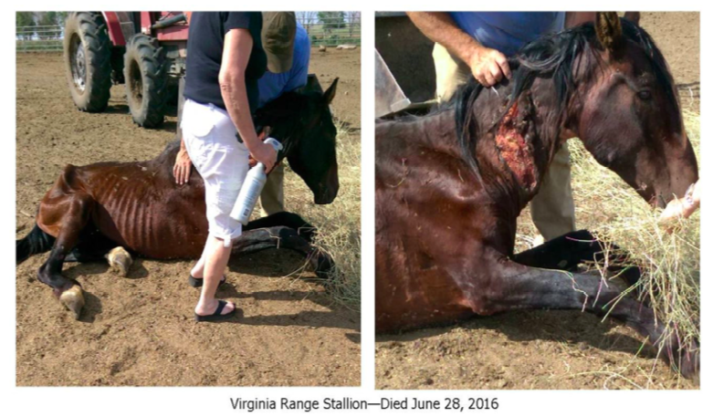

Francisco
FranciscoMay 2018
The Hallelujah Horses rescue mission is considered complete
The Hallelujah Horses rescue mission is considered complete
The final 20 horses, aged and blind stallions, are adopted by This Old Horse in Minnesota

Photo Credit: Toni Thomas
Elaine Nash reports a 96% success rate of the rehoming process
Horses are gradually transported across country as rescue groups and individuals adopt
Horses endure the winter waiting adoption in South Dakota as their welfare is managed by Fleet of Angels

Photo Credit: Elaine Nash
312 horses were transported to Colorado while others awaited adoption in South Dakota

Photo Credit: Elaine Nash
Court permanently seized the horses from the IPSMB and allowed Fleet of Angles to take full custody of all 600+ horses
Fleet of Angels paid $150,000 to stop an auction planned to send remaining horses to slaughter
Fleet of Angels located homes for 300 horses
Elaine Nash, of online equine welfare group Fleet of Angels, is contacted by the South Dakota States Attorney requesting aid
After submitting an IPSMB Documentation featuring her observations to the court, Colleen Burns is fired
A mare is seen and left untreated with a sever ankle injury

Photo Credit: Colleen Burns
State vet and sheriff visit the ranch and instruct the horses must be fed each day
Documented death count reaches 12 horses in three months
A four-month old filly is documented to weak to stand and is administered emergency care

Photo Credit: Colleen Burns
After a short rush of feed deliveries, they stopped and horses were fed once in a seven day period
Seven wild horses died from starvation on the property

Photo Credit: Colleen Burns
IPSMB employee Colleen Burns began documenting physical condition of the horses
Reports issued found horses dropping 'hundreds' of pounds due to lack of nutrition
After decades of successful operation, it is reported that financial status was low and feed for the horses became sporadic
The International Society for the Protection of Mustangs and Burros is founded in Lantry, South Dakota